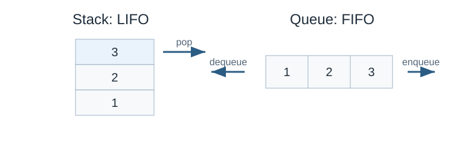

Stack & Queue
Stack
เป็นโครงสร้างข้อมูลเชิงเส้น โดยข้อมูลสามารถเข้าและออกได้เพียงทางเดียวที่เรียกว่า top
stack (กองซ้อน) จะใช้หลักเกณฑ์ LIFO (Last In First Out) ก็คือข้อมูลที่ถูกเพิ่มทีหลังสุดจะเป็นข้อมูลที่จะถูกนำออกก่อน
การเพิ่มข้อมูลลงใน stack จะเรียกว่าการ push ส่วนการลบข้อมูลจะเรียกว่าการ pop
ใน stack เราจะมีตัวแปรเก็บตำแหน่งข้อมูลที่เข้าหลังสุดอยู่เสมอ โดยจะเรียกว่า top

Stack and queue behavior. Original diagram for this guide.
ตัวอย่างการใช้ vector เพื่อ implement stack
#include <bits/stdc++.h>
using namespace std;
void printvec(vector<int> &a) {
for (auto x : a)
printf("%d ", x);
printf("\n");
}
int main() {
// stack
vector<int> a;
a.push_back(1);
a.push_back(2);
a.push_back(3);
a.push_back(4);
printvec(a); // 1 2 3 4
a.pop_back();
a.pop_back();
printvec(a); // 1 2
}Queue
queue (แถวคอย) เป็นโครงสร้างข้อมูลเชิงเส้น โดยข้อมูลจะเข้าได้ทางหนึ่งที่เรียกว่า rear และจะถูกนำออกได้ในอีกทางที่เรียกว่า front
queue จะหลักกร (First In First Out) ก็คือข้อมูลที่ถูกนำเข้าแรกสุดจะเป็นข้อมูลที่ถูกนำออกแรกสุด
การเพิ่มข้อมูลเข้า queue จะเรียกว่า enqueue และการลบข้อมูลจะเรียกว่า dequeue
ใน queue นั้นเราจะมีตัวแปรเก็บตำแหน่งสองตำแหน่ง
front ในการเก็บข้อมูลปัจจุบันที่ถูกนำเข้า แรก สุด
rear ในการเก็บข้อมูลปัจจุบันที่ถูกนำเข้า หลัง สุด
ดูภาพรวม queue ในรูปเดียวกับ stack ด้านบน
Stack vs Queue
Stack |
Queue |
|---|---|
LIFO |
FIFO |
one pointer (top) |
two pointers (front, rear) |
push |
enqueue |
pop |
dequeue |
recursion |
sequential |
Deque (double-ended queue)
ใน STL จะมีโครงสร้างข้อมูลชื่อ deque โดยจะเป็นโครงสร้างข้อมูลเชิงเส้นที่สามารถเพิ่มลบข้อมูลได้ทั้งสองทิศทางด้วยคำสั่ง
push_front
push_back
pop_front
pop_back
ตัวอย่าง deque
#include <bits/stdc++.h>
using namespace std;
void printq(deque<int> &a) {
for (auto x : a)
printf("%d ", x);
printf("\n");
}
int main() {
// double-ended queue
deque<int> b;
b.push_back(1);
b.push_back(2);
b.push_back(3);
b.push_back(4);
printq(b); // 1 2 3 4
b.pop_front();
b.pop_front();
printq(b); // 3 4
b.pop_back();
printq(b); // 3
}